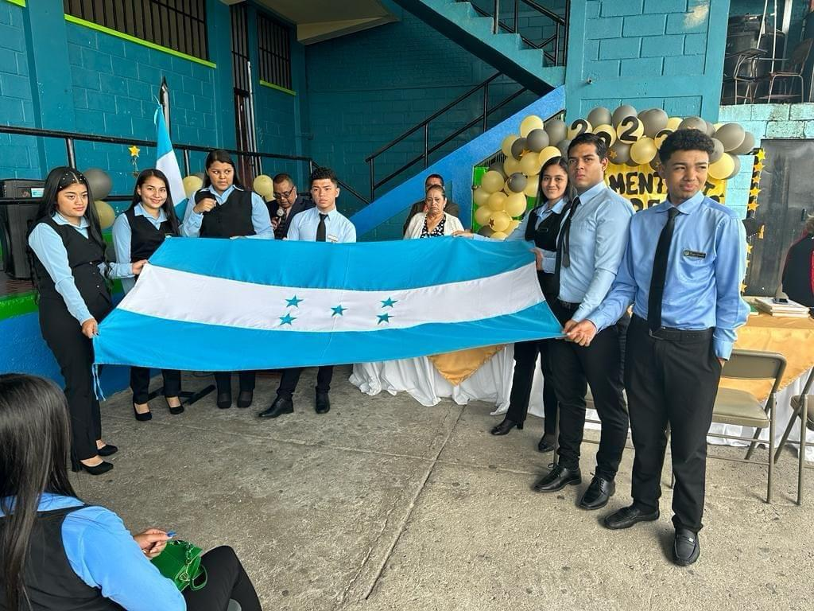
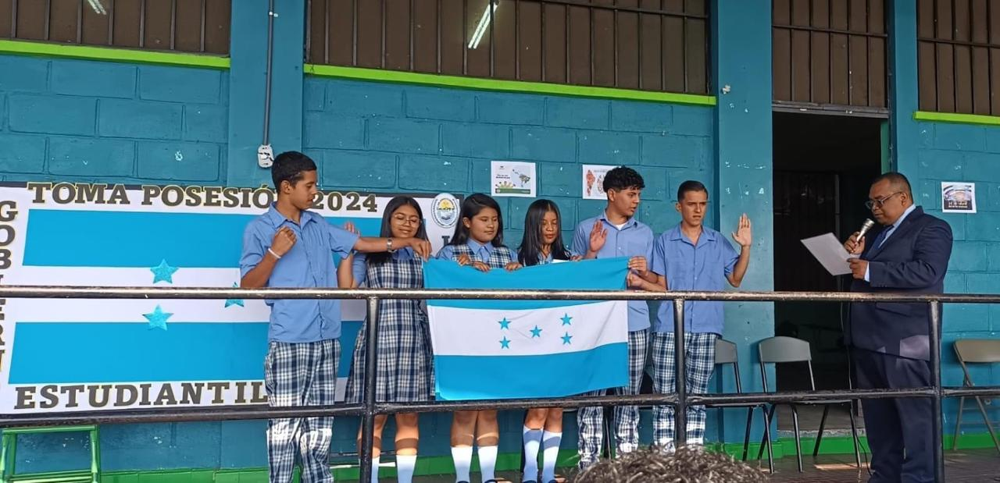
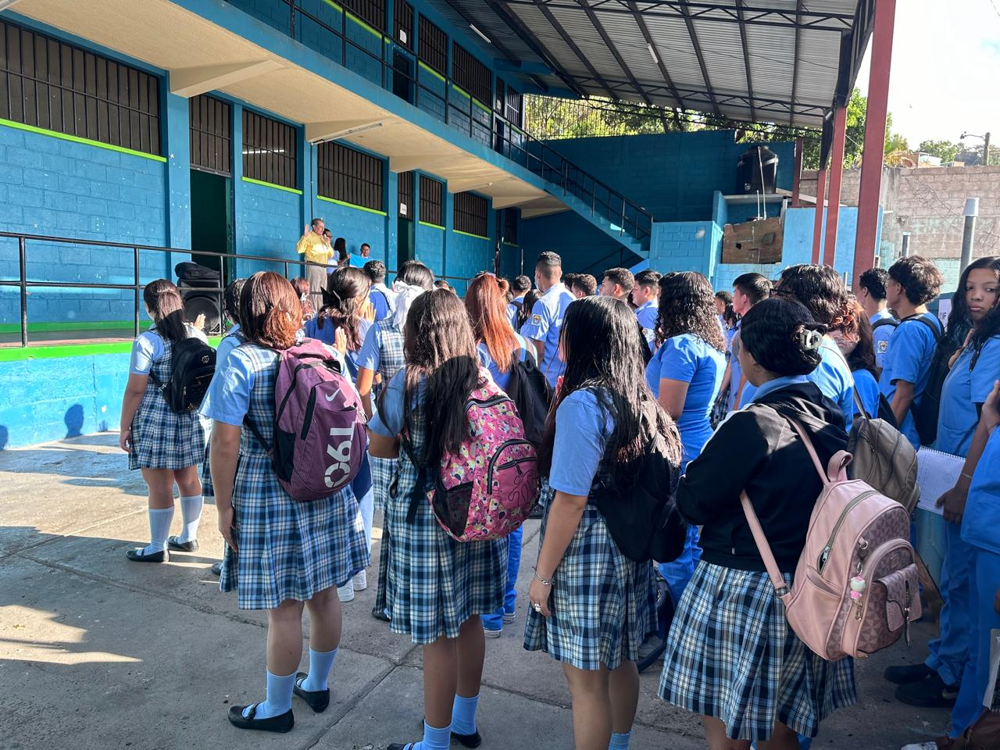
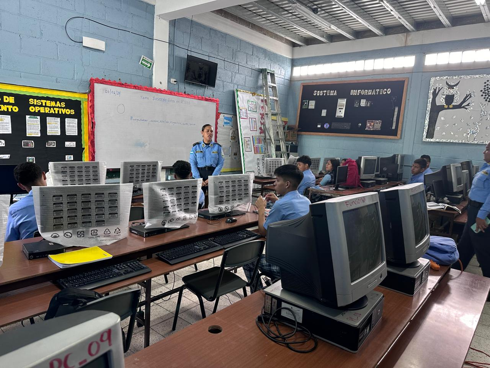
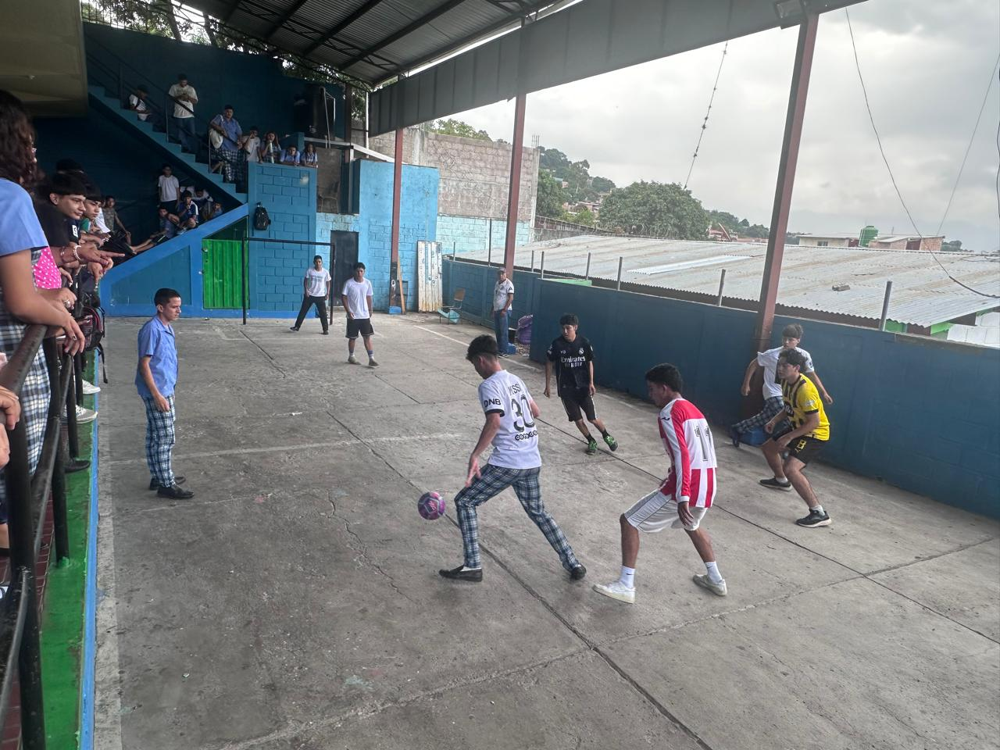

INSTITUTO GUBERNAMENTAL AUGUSTO URBINA CRUZ
Actividades

Juramentación de la bandera

Entonación del himno nacional

Juramentacion a los graduados del 2023

Formación de Lunes Cívico

Charla sobre violencia, impartida por la policia nacional

Campeonato de futbol